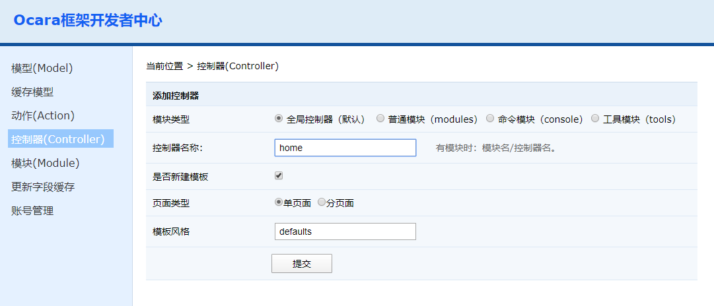

2.3 添加控制器（Controller）
进入开发者中心，点击左边的"控制器（Controller）"菜单。右边会出现新建控制器的界面。 添加选项介绍
模块类型 有普通控制器、Restful控制等类型。 （1）全局控制器（默认），即application/controller目录下的控制器。 （2）普通模块（modules），即application/modules目录模块。 （3）命令模块（console），即application/console目录模块。 （4）工具模块（tools），即项目目录下的tools目录模块。 控制器名称 填写格式有两种： （1）全局控制器（默认）填写：控制器名。如：home （2）其他三种模块填写：模块名/控制器名，中间用顺斜杠"/"分隔。如：admin/users 是否新建模板 注：同步渲染控制器有效。 打勾选中时，会自动新建View模板文件。 页面类型 注：同步渲染控制器有效。 （1）单页面，会只新建一个index模板文件； （2）分页面，则会新建index、create、update和read四个模板文件。 模板风格 注：同步渲染控制器有效。 模板类型，其实类似于是我们开源系统中的模板风格，一般默认为defaults，比如：全局控制器模块风格是application/view下面的defaults目录。